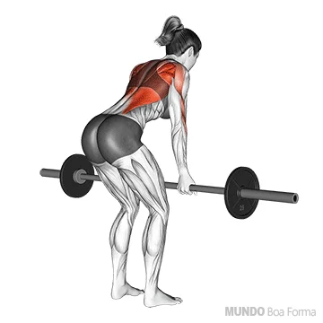

Costas
1. Remada Sentada

Realizar 3 séries de 8-12 repetições carga máxima
Escolha uma carga desafiadora mas que não atrapalhe a execução perfeita do exercício.
Sente-se no aparelho apoiando seus pés mas não estique suas pernas por completo,
imagine que tenha que espremer uma laranja imaginaria que está no centro das suas costas, com os braços esticados, inspire fundo e traga a carga em direção ao torax na intenção de esmagar a suposta laranja em suas costas,
puxando também em seguida a carga com os braços até que suas mãos estejam encostadas ao estômago, expire e relaxe primeiro os braços para só então relaxar as costas por completo inspirando.
2. Remada com barra
Realizar 3 séries de 8-12 repetições carga moderada
Nesse exercício devemos ter uma maior atenção na lombar.
Escolha uma carga em que não sinta uma pressão na lombar ao executar o exercício,
devidamente posicionada como na imagem a cima, comece o exercício com a carga nos joelhos, inspire fundo e deslize a carga pela sua coxa a puxando para cima expirando,em seguida baixe lentamente inspirando.
3. Pull-down

Realizar 3 séries de 10-15 repetições carga máxima
Selecione uma carga desafiadora mas que não impossibilite de fazer o exercício com perfeição.
Sente de maneira confortavel e trave seus joelhos nas travas a sua frente da maquina.
Após travar a carga de maneira que consiga puxar a barra sentada, respire fundo e traga a barra até a parte superior do peito expirando,
focando em baixar os cotovelos trabalhando sua dorsal e não forçando a carga com os punhos,
em seguida libere a carga concentrando o movimento e inspirando.
4. Puxada no Pulley
"usar pegas, nao triangulo"

Realizar 3 séries de 10-12 carga maxima
Selecione uma carga desafiadora mas que nao te impossibilite de fazer o exercicio com perfeição.
Sente de maneira confortavel e trave seus joelhos nas travas a sua frente na maquina.
Após travar a carga de maneira que consiga puxar as pegas sentada, inspire e traga as pegas até a parte superior do peito expirando,
focando em baixar os cotovelos trabalhando sua dorsal e não forçando a carga com os punhos,
em seguida libere a carga concentrando o movimento e inspirando.